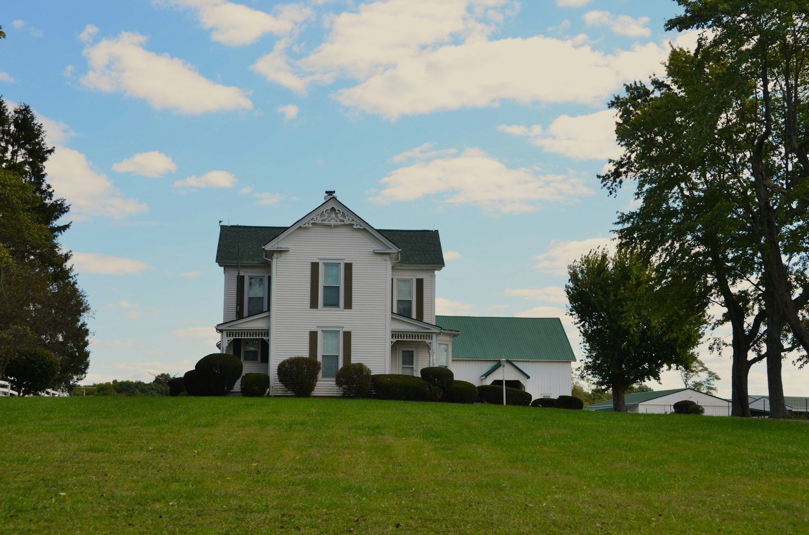
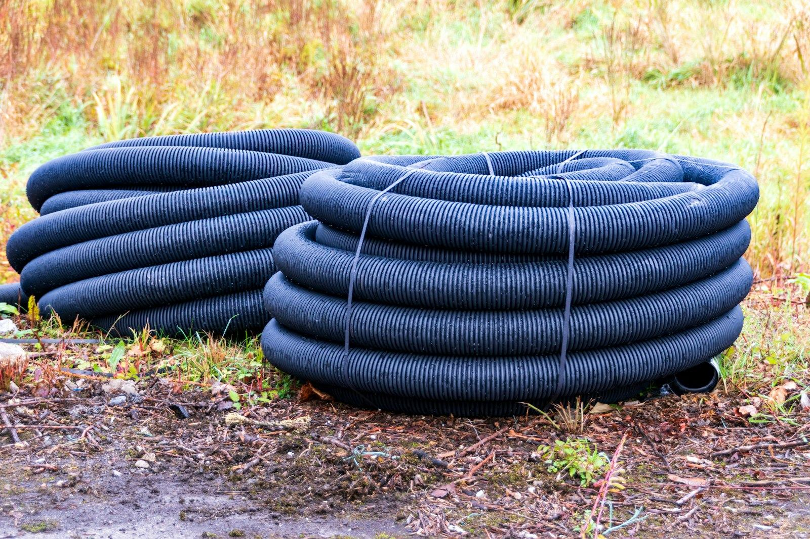
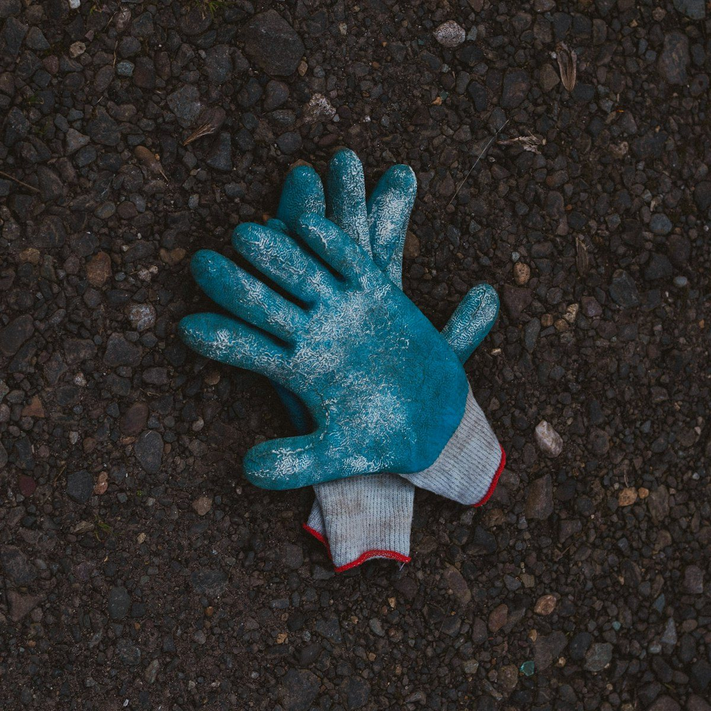
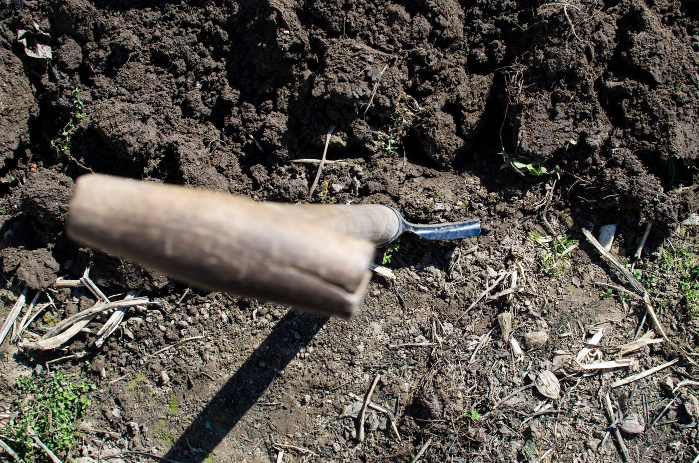
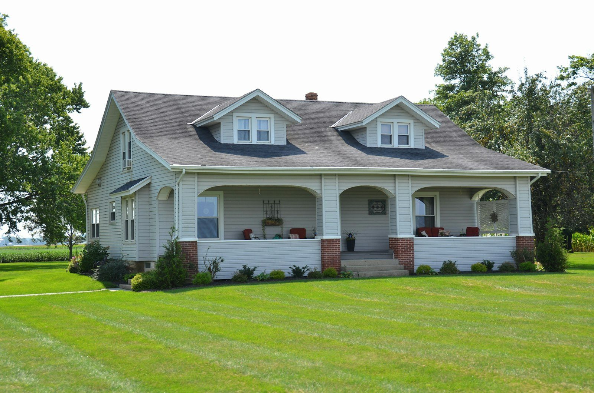
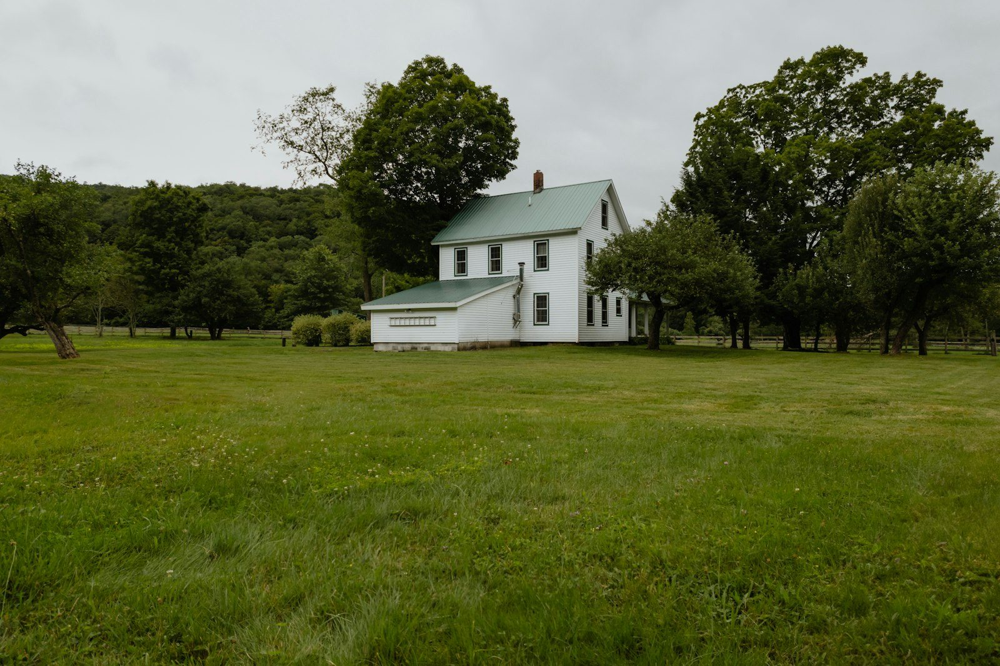

Your local septic tank service.
Septic tank pumping, septic service and drain lines from W Pine St in Mount Airy, NC.
- Monday to Friday, 7:30 to 5
- Call ahead to confirm
- 1401 W Pine St, Mount Airy
Family owned and operatedfor over 50 years

Services
What we do
Septic tank pumping and septic service. Call us and tell us what you need.

Septic tank pumping
Pumping for your septic tank. Call us to request it.
Septic service
Service for the tank and the system around it. Tell us what you are seeing.
Drain lines
For the lines that run to and from the tank. Call and tell us what is going on.
Need service? Call us to request it.(336) 786 2402
Signs to watch
What is your system doing?
A few signs people notice at the drains and in the yard. If you see one, give us a call and tell us what you are seeing.
These are general signs, not a diagnosis. Call and ask about yours.
Request service
How it works
Give us a call, or leave your name and number in the form below.

Give us a call
Ring (336) 786 2402, Monday to Friday, 7:30 to 5. Call ahead to confirm.
Tell us what you see
Slow drains, a wet spot in the yard, or that you want pumping.
Or send a request
Leave your name, number and a few words in the form.
About us
Family owned and operated for over 50 years
V & S Septic Service does septic tank pumping and septic service, at 1401 W Pine St in Mount Airy, NC.
Call (336) 786 2402


Contact
Request service
Give us a call or leave your name and number here.
- Call(336) 786 2402
- Directions1401 W Pine St, Mount Airy
- Hours
Monday to Friday, 7:30 to 5
Call ahead to confirm.
Thanks. We have it.
We will call you back soon.
This is a sample site, so nothing was actually sent.